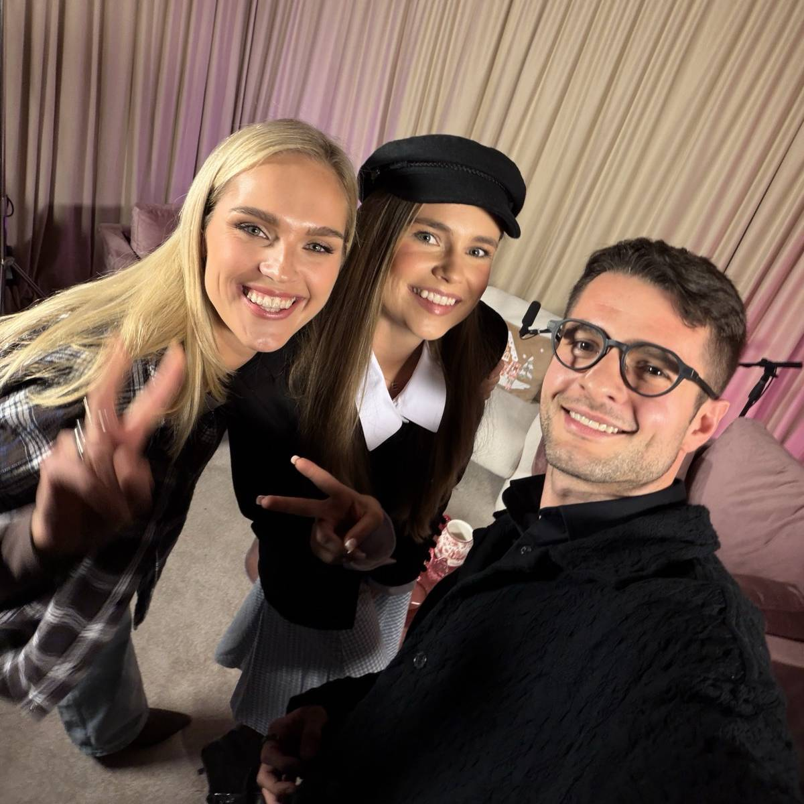
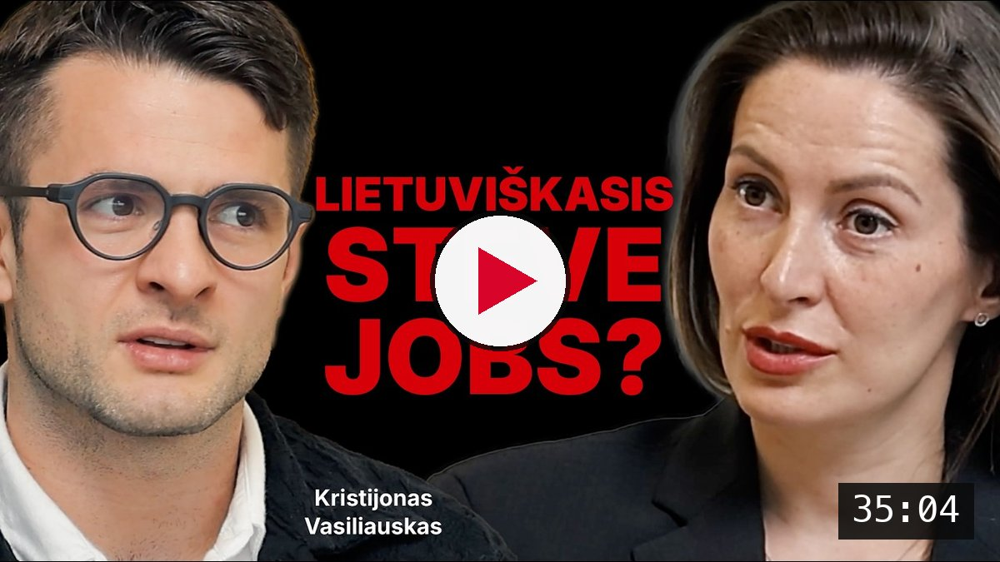

Kris Vas · Mokymosi klubas #2 · 2026-11
Įdomiausias žaidimas yra realus gyvenimas
Viskas, kas netilpo į laišką: garso versija, keturių laidų ištraukos, būrelio patikra ir lapas tavo mokyklai.
🎧 Klausyk🎬 Laidos✅ Patikra🏫 Mokyklai📚 Namie✍️ Atsakyk📎 Šaltiniai

Kaunas, laida „Arbatėlė". Viena iš keturių lapkričio laidų
🎧 Klausyk (4 min.)
Tai mano balso klonas, ne įrašas gyvai. Sukurtas su ElevenLabs. Tarimas gali kur nors šlubuoti.
Tekstas
Labas, mamos ir tėčiai. Čia Kristijono Vasiliausko balso klonas. Tekstą parašė Kristijonas, o skaitau aš, mašina.
Šio laiško tema: įdomiausias žaidimas yra realus gyvenimas.
Lapkritį apie vaikus ir telefonus kalbėjau keturiose laidose.
Iš jų man labiausiai įstrigo vienas sakinys. Bandom parodyti vaikams, kad įdomiausias žaidimas yra realus gyvenimas.
Pats ilgai gyvenau kitaip. Valgiau prie ekrano ir svėriau šimtą dešimt kilogramų.
Telefoną atimti lengva. Sunkiau pasiūlyti vaikui ką nors įdomesnio. Tam ir yra būreliai.
Kas yra technologijų etiketas? Tai susitarimas, kaip elgiamės su telefonu, kai esam vieni ir kai šalia yra kiti žmonės. Vaikai jo mokosi žiūrėdami į mus.
Vienoje laidoje paprašiau suaugusiųjų atsidaryti telefone ekrano laiką. Ten parašyta, kiek kartų per dieną pakeli telefoną. Daugiau nei penkiasdešimt? Pradėk nuo savęs, tada rodyk pavyzdį vaikui.
Būrelis yra vieta, kur vaikas tą susitarimą treniruoja. Valanda su komanda, vadovu ir užduotimi, kurios neišspręsi braukydamas ekraną.
Kanadoje apklausė beveik dvidešimt devynis tūkstančius septintokų. Būrelius lankantys vaikai po pamokų rečiau praleisdavo prie ekrano dvi ir daugiau valandų. Jie rečiau jautė nerimą. Tai ryšys, ne įrodyta priežastis.
Ir kodėl visa tai darau. Su Džiugu, mano bendraįkūrėju ir geriausiu draugu, susipažinom septynerių. Draugaujam dvidešimt septynerius metus. Noriu, kad kiti vaikai surastų tokį draugą. Ekrane draugo taip nerasi. Reikia kambario, kuriame kartu ką nors veiki.
Dabar praktika.
Paversk žaidimą stiprybių testu. Paklausk vaiko, kas jam žaidime patinka labiausiai. Greitai spręsti? Tiks komandinis sportas ar debatai. Statyti pasaulius? Ieškok veiklos, kur kuriama rankomis. Sakau atvirai: tokius kūrybos būrelius kuriu ir pats.
Patikrink savo būrelį per dvi minutes. Trys klausimai. Ar vaikas ten pats ką nors daro: kuria, treniruojasi, groja, ne tik klauso? Ar telefonai per užsiėmimą padėti į šalį, ir vaikų, ir vadovo? Ar grįžęs pasakoja pats, neklaustas? Jei bent du atsakymai taip, būrelis atlieka savo darbą. Jei mažiau, pirma pasikalbėk su vadovu. Sakau atvirai: mūsų būreliuose telefonų nėra, todėl antras klausimas man patogus.
Pradėk mokymosi klubą namie. Kiekvieną vakarą devintą valandą per TikTok tiesiogiai skaitau knygą balsu. Turiu disleksiją, todėl skaitau lėtai ir klystu.
Ką iš to išmokau. Žmonės pasiilgę mokymosi. Kai mato skaitantį žmogų, patys pasiima knygą. Vieną sekmadienio rytą prisijungė daugiau nei tūkstantis žmonių.
Geriausiai įsimenu, kai žinau, kad turėsiu papasakoti kitam. Mokslininkai tai vadina globotinio efektu. Bandyme studentai, kurie ruošėsi mokyti kitą, iškart po to prisiminė daugiau nei tie, kurie ruošėsi testui.
Knygos nuo mano stalo. Antonio Damasio, Dekarto klaida, angliškai. Rikas Rubinas, Kūryba, būdas būti. Dabar skaitau Džeimso Maldūno Meilės mašinas, apie dirbtinį intelektą ir santykius.
Namie užtenka dvidešimt minučių. Kiekvienas su savo knyga, telefonai virtuvėje. Paskui kiekvienas papasakoja vieną dalyką, kurį sužinojo. Vaikas moko tave.
Trys žingsniai tavo mokyklai. Parašyk klasės tėvų grupei: gal sutariam vieną bendrą telefonų taisyklę? Atsispausdink etiketo lapą ir nunešk klasės auklėtojai. Paklausk būrelio vadovo: kur per užsiėmimą būna telefonai?
Ir trys klausimai tau. Ką norėtum išmokti apie dirbtinio intelekto įrankius mokymuisi? Koks sveikas įprotis su technologijomis tavo namuose sunkiausias? Kokius tris būrelius turėtų išbandyti kiekvienas vaikas?
Atsakyk į vieną, užtenka vieno sakinio. Atsakymus Kristijonas perskaitys pats.
Dar viena svarbi eilutė. Kristijonas yra Robotikos akademijos, BrAIn Club ir ExoClass bendraįkūrėjas, todėl apie būrelius kalba šališkai. Jokio konkretaus būrelio šiame laiške jis nerekomenduoja.
Ačiū, kad esi čia. Iki kito laiško!
🎬 Keturios laidos, viena mintis
Lapkritį apie vaikus ir telefonus kalbėjau keturiose laidose. Nuorodos atidaro video ten, kur kalbu.
Iš jų man labiausiai įstrigo vienas sakinys. Pasakiau jį Leen Kozlovai: „Bandom parodyti vaikams, kad įdomiausias žaidimas yra realus gyvenimas."

▶ Žiūrėk nuo 35:04, apie 2 min. →Visą pokalbį pažiūrėjo 12 088 kartus1.
Kanalas: Apvalaus kvadrato mokykla
Paprašiau suaugusiųjų atsidaryti telefone ekrano laiką. Ten parašyta, kiek kartų per dieną pakeli telefoną. Daugiau nei 50? Pradėk nuo savęs, tada rodyk pavyzdį vaikui. Pradėkim pirma mes, suaugusieji.
▶ 50:10 →
Kodėl organizuoju būrelius: su Džiugu (LinkedIn · Instagram), mano bendraįkūrėju ir geriausiu draugu, susipažinom septynerių ir draugaujam 27 metus. Būrelius organizuoju, nes noriu, kad kiti vaikai surastų tokį draugą, kokį suradau aš. (perfrazuota)
▶ 42:23 →
Paaugliams ir suaugusiems palinkėčiau nuobodybės. Dabar tai vertingiausias dalykas. (perfrazuota)
▶ 52:55 →
Vietoj „kiek žiūrėjai?" paklausk vaiko: „ką šiandien sukūrei?"
▶ Visa laida →Pasakojau, kaip valgiau prie ekrano ir svėriau 110 kg. Ir kai vaikas nori mesti būrelį, siūliau paklausti: pavargai, per sunku, ar nepatinka būrelis arba vadovas.
▶ Mano dalis „YouTube", nuo 1:54:25 →
▶ Trumpa ištrauka „Instagram": „Kaip garantuotai sugadinti vaiką" →
Šioje laidoje du svečiai, mano dalis prasideda nuo 1 val. 54 min.; pirma laidos dalis apie sunkią temą (seksualinę prievartą). Žiūrėk be vaikų.
🧭 Kodėl būreliai
Technologijų etiketas yra susitarimas, kaip elgiamės su telefonu, kai esam vieni ir kai šalia yra kiti žmonės. Vaikai jo mokosi žiūrėdami į mus. Būrelis yra vieta, kur vaikas tą susitarimą treniruoja. Valanda su komanda, vadovu ir užduotimi, kurios neišspręsi braukydamas ekraną.
Kanadoje apklausė 28 712 septintokų3. Būrelius lankantys vaikai po pamokų rečiau praleisdavo prie ekrano dvi ir daugiau valandų. Jie rečiau jautė nerimą. Tai ryšys, ne įrodyta priežastis.
✅ Būrelio patikra per 2 minutes
Trys klausimai apie būrelį, kurį vaikas lanko dabar. Atsakyk iš atminties.
1. Ar vaikas ten pats ką nors DARO (kuria, treniruojasi, groja), ne tik klauso?
2. Ar telefonai per užsiėmimą padėti į šalį, ir vaikų, ir vadovo?
3. Ar grįžęs pasakoja pats, neklaustas?
Sakau atvirai: mūsų būreliuose telefonų nėra, todėl antras klausimas man patogus.
⚗️ Eksperimentinis įrankis, sukurtas su DI. Gali klysti, todėl svarbius dalykus pasitikrink pas patį būrelio vadovą. Nemokamas. Grįžtamasis ryšys laukiamas: radai klaidą, parašyk per krisvas.lt. Patikra nevertina ir nerikiuoja jokio konkretaus būrelio, atsakymai lieka tavo naršyklėje.
🎮 Žaidimas kaip stiprybių testas
Paklausk vaiko, kas jam žaidime patinka labiausiai. Greitai spręsti? Tiks komandinis sportas ar debatai. Statyti pasaulius? Ieškok veiklos, kur kuriama rankomis.
Tai mano pavyzdžiai iš daugiau nei dešimtmečio darbo su vaikais, ne tyrimas. Sakau atvirai: tokius kūrybos būrelius kuriu ir pats.
🏫 3 žingsniai tavo mokyklai
Etiketo lapas A4 (PDF)Pasirašyk etiketą
Pažymėti žingsniai lieka tik tavo naršyklėje.
📚 Mokymosi klubas namie
Receptas, 20 minučių. Kiekvienas su savo knyga, telefonai virtuvėje. Paskui kiekvienas papasakoja vieną dalyką, kurį sužinojo. Vaikas moko tave.
Kiekvieną vakarą 21:00 per „TikTok" tiesiogiai skaitau knygą balsu. Turiu disleksiją, todėl skaitau lėtai ir klystu. Ką iš to išmokau:
- Žmonės pasiilgę mokymosi. Kai mato skaitantį žmogų, patys pasiima knygą. Vieną sekmadienio rytą prisijungė 1 134 žmonės4.
- Geriausiai įsimenu, kai žinau, kad turėsiu papasakoti kitam. Mokslininkai tai vadina globotinio (angl. protégé) efektu. Bandyme studentai, kurie ruošėsi mokyti kitą, iškart po to prisiminė daugiau nei tie, kurie ruošėsi testui5.
- Knygos nuo mano stalo: Antonio Damasio „Descartes' Error" (angliškai) ir Rick Rubin „Kūryba. Būdas būti". Dabar skaitau James Muldoon „Meilės mašinos", apie DI ir santykius.
✍️ Trys klausimai tau
Atsakyk į vieną, užtenka vieno sakinio. Atsakymus perskaitysiu pats. Kitame laiške parodysiu, ką atsakėt, be vardų.
Mygtukas atidaro tavo el. pašto programą su paruoštu laišku man. Šis puslapis tavo teksto niekur nesaugo ir nesiunčia.
Ką norėtum išmokti apie DI įrankius mokymuisi?
Ačiū! Jei laiškas neatsidarė, parašyk man per krisvas.lt.
Koks sveikas įprotis su technologijomis tavo namuose sunkiausias?
Ačiū! Jei laiškas neatsidarė, parašyk man per krisvas.lt.
Kokius tris būrelius turėtų išbandyti kiekvienas vaikas?
Ačiū! Jei laiškas neatsidarė, parašyk man per krisvas.lt.
📎 Šaltiniai
- „YouTube", „Sąmoningumas su LEEN", laida paskelbta 2026-11-17, 12 088 peržiūros 2026-11-20. „Arbatėlės" laidoje du svečiai, mano dalis prasideda nuo 1 val. 54 min.; pirma laidos dalis apie sunkią temą.
- MailerLite, grupė zemelapis-jul30, 458 aktyvūs prenumeratoriai, 2026-11-20. Praeitas laiškas: 355, 2026-11-05.
- Oberle ir kt., Preventive Medicine, 2020, 141: 28 712 septintokų, Britų Kolumbija, 2014–2018. Vienkartinė apklausa, vaikai atsakė patys. Ryšys, ne įrodyta priežastis, doi.org.
- „TikTok LIVE Center", 2026-10-04, sekmadienio ryto sesija: 1 134 unikalūs žiūrovai.
- Nestojko, Bui, Kornell ir Bjork, Memory & Cognition, 2014, 42(7). Laboratoriniai bandymai su studentais; mokyti jiems realiai nereikėjo, poveikis matuotas iškart, doi.org. Terminas „protégé effect": Chase ir kt., 2009.
Atvirai
Laišką ir šį puslapį rašiau su disleksija, ADHD ir DI padėjėju. 🎧 Garso versijoje girdi mano balso kloną. Esu Robotikos akademijos, BrAIn Club ir ExoClass bendraįkūrėjas, todėl apie būrelius kalbu šališkai. Jokio konkretaus būrelio nerekomenduoju.
Ačiū Leen Kozlovai, Dijorai ir Mildai, Alanui Dzeranovui, Vilmai ir Violetai už pokalbius ir klausimus · Ignui Krupavičiui už atvirumą prie vieno stalo · Džiugui už 27 metus draugystės · visiems, kas vakarais ateina į tiesioginį skaitymą.
Parengta su DI pagalba, šaltiniai tikrinti, bet galiu klysti. Pastabos laukiamos. Privatumas: anoniminė statistika be slapukų. Microsoft Clarity įsijungia tik paspaudus „Leisti". Privatumo politika ·